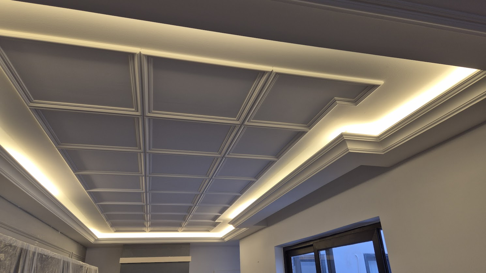
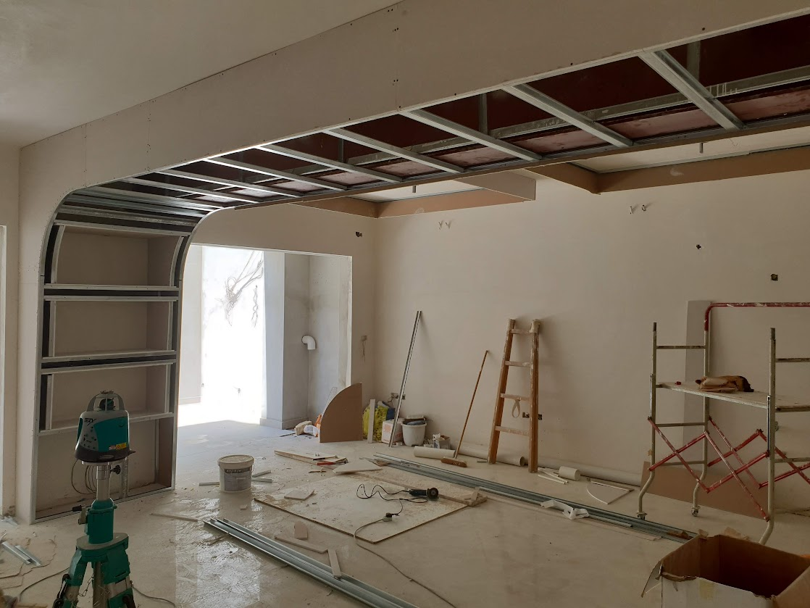
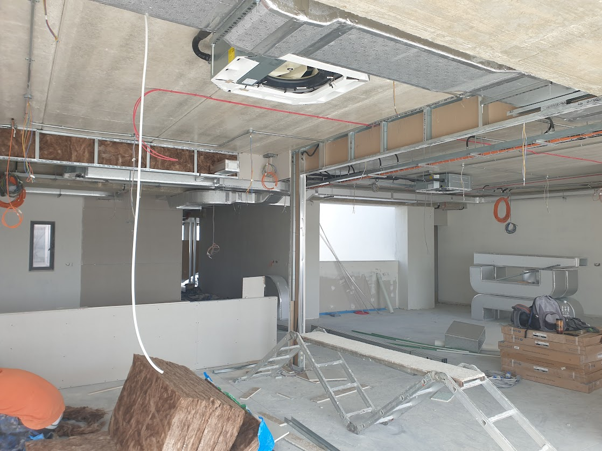
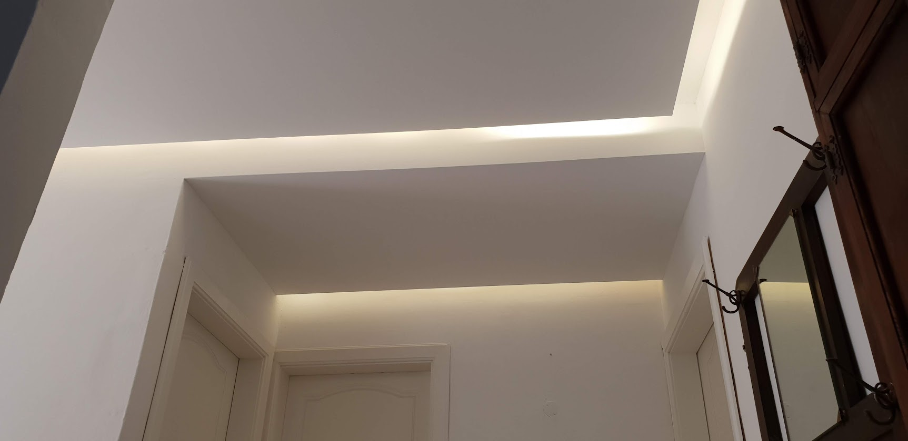
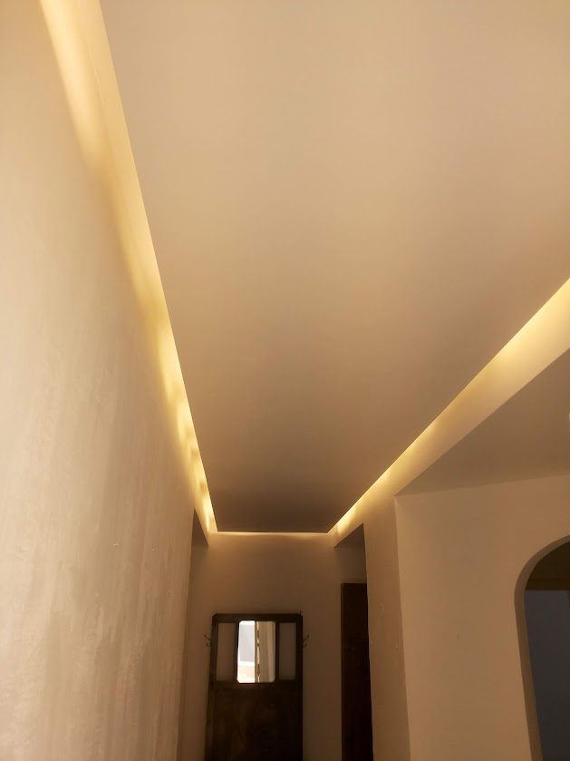

Gypsum Ceilings & Partitions in Malta
Gypsum boards (drywall) allow us to create elegant ceiling designs, bulkheads, recessed lighting zones, archways and room dividers without the weight and time of traditional masonry. This gives interiors a polished, modern look and allows flexibility in how spaces are used and lit.
We design and construct all types of gypsum ceilings — from simple flat ceilings to multi-level coffered designs with hidden LED lighting strips and integrated downlights. We also install suspended tile ceilings (grid systems) commonly used in offices, retail units and commercial spaces. For high-humidity environments such as basement levels, maisonettes and outdoor facades, we specialise in the installation of premium exterior aqua boards (including BoardeX) designed to effectively block moisture and ensure lasting structural integrity.





What Our Gypsum Service Includes
- Flat plasterboard ceilings on metal framework
- Multi-level and stepped ceiling designs
- Bulkheads for concealed lighting, curtain recesses and AC units
- Suspended tile ceilings (grid systems) for offices and commercial spaces
- Gypsum partition walls for room dividing
- Archways and curved feature walls
- Recessed downlight zones and LED strip channels
- Sound-insulated partitions between rooms
- Jointing compound finishing for smooth, paint-ready surfaces
Materials We Use
- Standard and moisture-resistant gypsum boards (12.5mm and 15mm)
- Exterior grade aqua boards (BoardeX) for superior humidity blocking
- Galvanised steel C-stud and U-channel framing
- Suspended grid systems and ceiling tiles for commercial fit-outs
- Knauf or British Gypsum jointing compound and tape
- Acoustic insulation batts for sound-rated partitions
- Ceiling hanger rods and brackets
- Moisture-resistant boards for bathrooms and wet areas
Why It Matters
Gypsum ceilings are installed after rough electrical is done, so that cabling to downlights and LED channels can be neatly concealed. We coordinate the layout with the lighting plan to make sure every recessed light and strip is perfectly positioned before the boards go up.